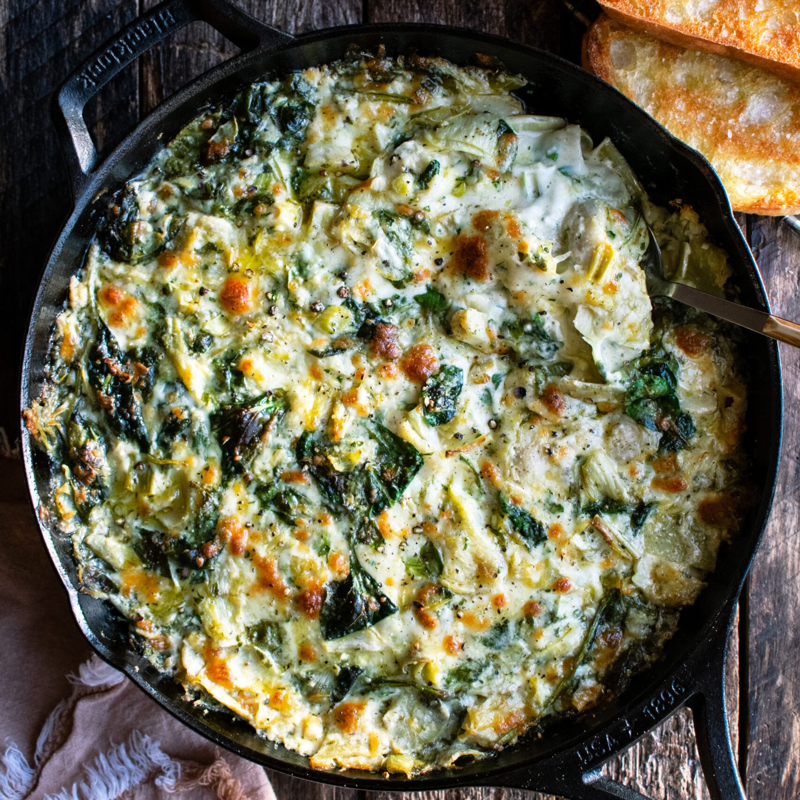

Spinach and Artichoke Dip
Home

Description
This recipes is a dish that will "wow" almost anybody. Spinach and Artichoke Dip is a classic that everyone must try at some point in their life. So why not today?
This recipe is great for family get togethers, game nights, super bowl parties, and so much more. Hint - If you like spice, just add more red pepper flakes! Thank me later.
Ingredients
- 10 oz. frozen chopped spinach, thawed
- 1 14oz. can quartered artichoke hearts
- 1.5 cups shredded mozzarella, divided
- 1/4 cup grated Parmesan
- 1 pinch crushed red pepper
- 2 Tbsp butter
- 2 cloves garlic, minced
- 8 oz. cream cheese
- 1/2 cup sour cream
- 1/4 cup mayonnaise
- 2 dashes hot sauce
Steps
- Preheat the oven to 375ºF. Make sure the spinach is fully thawed, then squeeze out as much of the excess water as possible. Once squeezed, break the spinach up so there are no large clumps. Place the squeeze dried spinach in a large bowl.
- Drain and roughly chop the artichoke hearts. Place the artichoke hearts in the bowl with the spinach, 1 cup of the mozzarella, grated Parmesan, and crushed red pepper. Stir these ingredients together to combine, then set them aside.
- Add the butter and minced garlic to a small sauce pot. Sauté the garlic in the butter over medium-low heat for about two minutes, or just until the garlic becomes very fragrant.
- Cut the cream cheese into chunks and add it to the sauce pot along with the sour cream and mayonnaise. Heat and whisk these ingredients together for about five minutes, or until they melt together into a smooth sauce. Finally, stir in a couple dashes of hot sauce.
- Pour the creamy garlic sauce over the spinach artichoke mixture, then stir until everything is evenly combined and coated in sauce. Transfer the mixture to a 2-quart casserole dish, then top with the remaining ½ cup shredded mozzarella.
- Bake the dip for about 30 minutes, or until it is bubbling around the edges and the cheese on top is turning golden brown. Serve while hot.